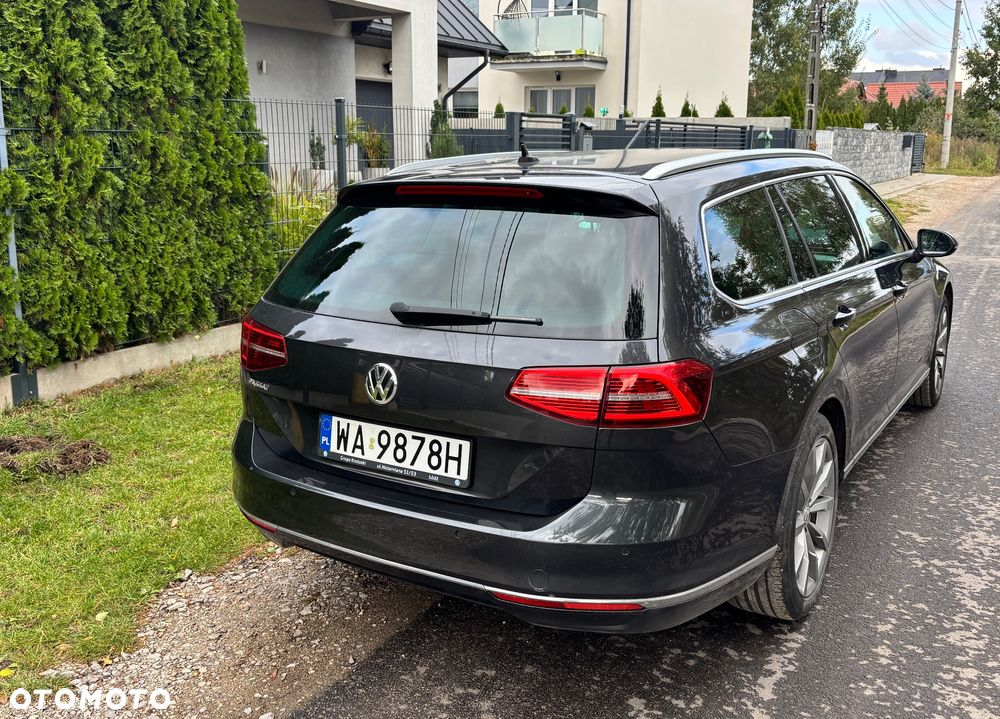
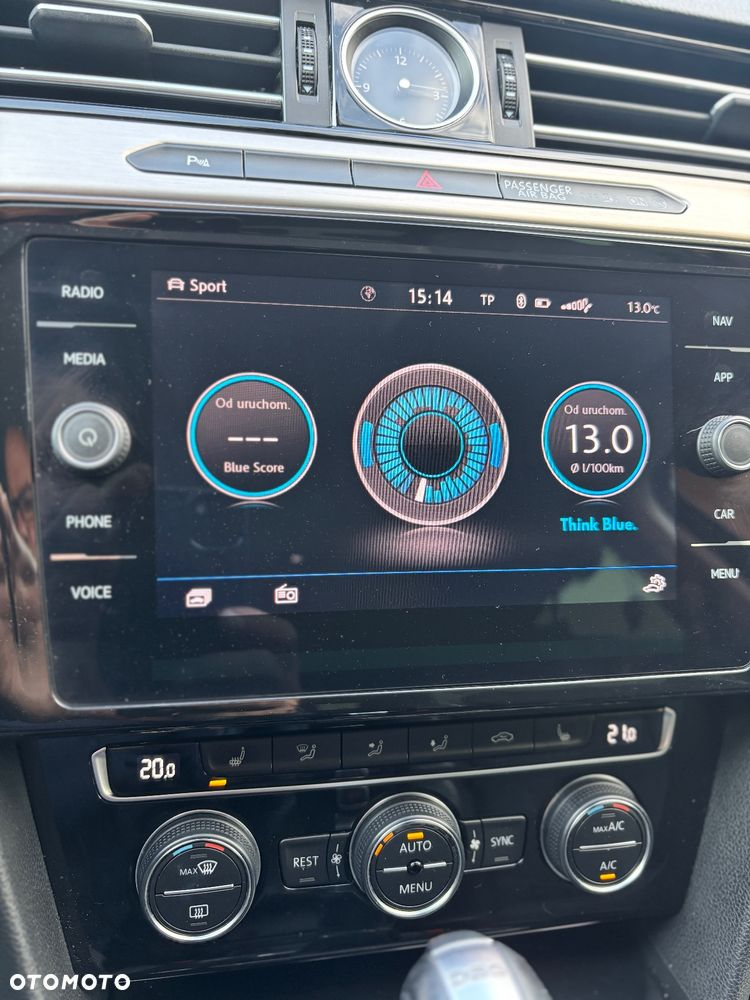
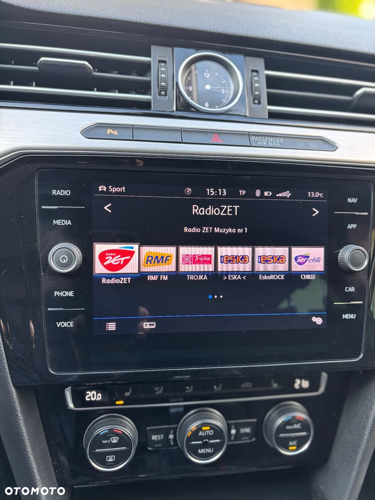
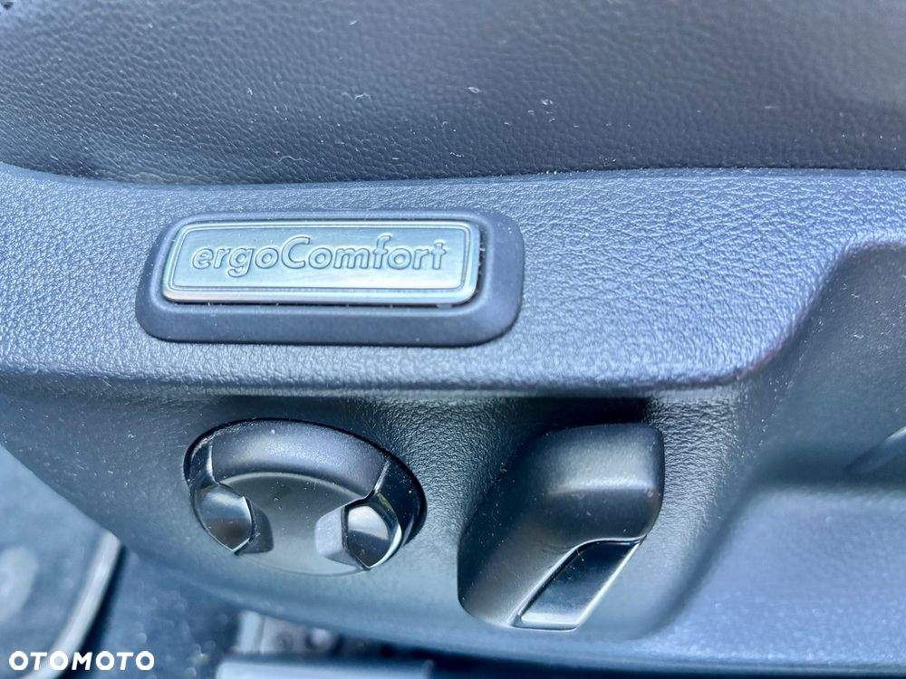

Witam,
na sprzedaż Volkswagen Passat Highlinie - auto kupione w polskim salonie Volkswagen i zarejestrowane w listopadzie 2019, bezwypadkowe, bardzo dobrze wyposażone. Samochód użytkowany okazyjnie jako drugie auto w rodzinie, stąd jego niski przebieg.
Najważniejsze cechy:
- Dynamiczny i oszczędny silnik, spalanie od 6 do 8 l. (trasa/miasto)
- Atrakcyjny kolor Mangan Metalik
- Najwyższa wersja wyposażenia Highline
- Pakiet Biznes: LED Top, rozpoznawanie znaków drogowych, dostęp bezkluczykowy Keyless Access, nawigacja satelitarna,
- System Dynamic Light Assistance - samoczynne dostosowanie zasięgu i siły wiązki światła
- Easy open / easy close, elektryczna klapa bagażnika z czujnikiem do otwierania stopą oraz wyborem opóźnionego zamknięcia klapy
- Przyciemniane szyby boczne tylne oraz tylna
- Rear Assist - czujniki parkowania przód tył oraz kamera cofania, wybór widoku z kamery, widok przeszkód, linii cofania
- Lane Assist - system utrzymania pasa ruchu
- Autoalarm
- Wewnętrzne oświetlenie Ambiente
- Aktywny tempomat - świetnie i bardzo płynnie działający
- Wybór profilu jazdy - normal, sport, eco, individual
- Skórzana kierownica wielofunkcyjna z łopatkami zmiany biegów
- Elektrycznie składane lusterka
- System Apple CarPlay / Android Auto
- Auto hold - automatycznie utrzymuje samochód po zatrzymaniu bez konieczności trzymania nogi na hamulcu / zwalnia hamulec po naciśnięciu pedału gazu
- Funkcja automatycznego zatrzymania po wykryciu przeszkody przy cofaniu- Tapicerka Alcantara
- Dotykowy ekran odkrywający dodatkowe funkcje po zbliżeniu dłoni
- Bardzo duży bagażnik z możliwością obniżenia podłogi i powiększenia (ogromy)
- Trzystrefowa klimatyzacja z osobnym panelem sterowania dla tylnej kanapy
- Podgrzewane fotele
- Trójdzielna, składana kanapa tylna, z podłokietnikiem i uchwytami
- Komplet oryginalnych dywaników materiałowych + komplet oryginalnych wycieraczek gumowych
- Regulowany podłokietnik kierowcy i pasażera
- Pełnowymiarowe koło zapasowe
Samochód sprzedaje z dwoma kompletami kół (felgi aluminiowe + opony):
- letnie oryginalne dedykowane do R-line 18" felgi VW Monterey z oponami Goodyear F1 Eagle 235/45 R18 (idealnie dopasowane do koloru auta)
- zimowe oryginalne 17" felgi VW London z oponami Bridgestone Blizza LM 005 215/55 R17
Oba komplety opon to wysokie i polecane modele z półki premium.
Auto regularnie serwisowane - olej i filtry wymienione co 10 tys. km - częściej niż zaleca producent (co 15 tys. km). Nie wymaga żadnej bieżącej pracy ani nakładów.
Szukasz zadbanego, dobrze wyposażonego i pewnego auta - zapraszam do obejrzenia.
Tel.
